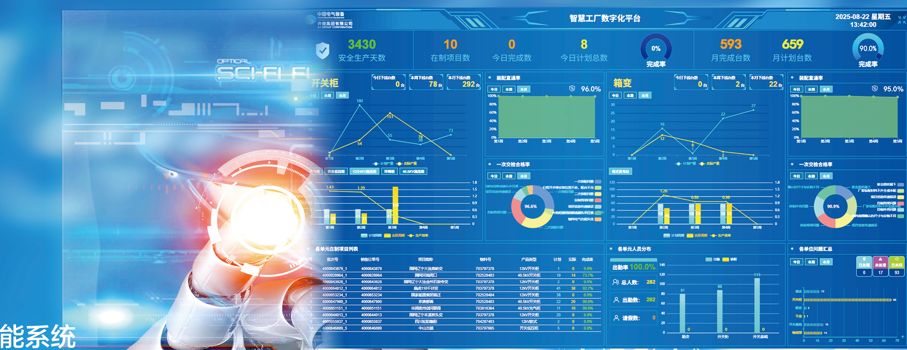

01
Material Inspection
Incoming conductor, core and insulation materials.

Manufacturing Excellence
Integrated transformer manufacturing from incoming materials to final assembly and testing, supported by digital production systems and documented quality controls.
Factory at a Glance
The manufacturing base combines transformer production, prefabricated-substation assembly and supporting test resources in a single industrial campus.
Company-scale figures use the Chinese corporate catalog as the selected website source where catalog editions conflict.
End-to-End Manufacturing Flow
The page now presents manufacturing as a controlled delivery chain instead of isolated workshop cards, making each production stage easier to understand at a glance.
Incoming conductor, core and insulation materials.
Core cutting, stacking and dimensional control.
HV and LV winding to approved design data.
Insulation build and lead connection work.
Core, coils, leads and clamping integration.
Insulation drying before oil processing and final assembly.
Tank, radiators, bushings and accessories.
Inspection, agreed testing and release records.


Digital Manufacturing Systems
SRM, MOM, QMS and WMS are separated into distinct business functions so customers can understand what the digital layer is intended to control.
Supplier coordination, material delivery and procurement collaboration.
Production planning, process execution and shop-floor coordination.
Quality-control records and traceability through the manufacturing process.
Warehouse, inventory and material-flow management.

Testing & Quality Assurance
Testing scope depends on the product, applicable specification and project contract. The page separates routine, special and witness activities so buyers can see how FAT requirements fit into delivery.
Routine tests and inspection points completed before release according to the applicable product and project requirements.
Type or project-specific tests are arranged when required by the specification or contract.
Customer or third-party witness arrangements can be defined for agreed FAT and inspection activities.
Inspection and test records form part of the project document chain where required.

Factory Gallery


Manufacturing FAQ
Final scope is always governed by the project specification and contract.
Witness arrangements can be included where required by the project and agreed in the inspection and testing scope.
Typical requirements may include approved drawings, inspection and test records, FAT documentation, packing information and project-specific handover documents.
Factory-visit requirements can be submitted through the inquiry form so the relevant product, project stage and visit purpose can be reviewed in advance.
Share the product family and purpose of your visit.
Send ratings, standards and testing requirements for technical review.